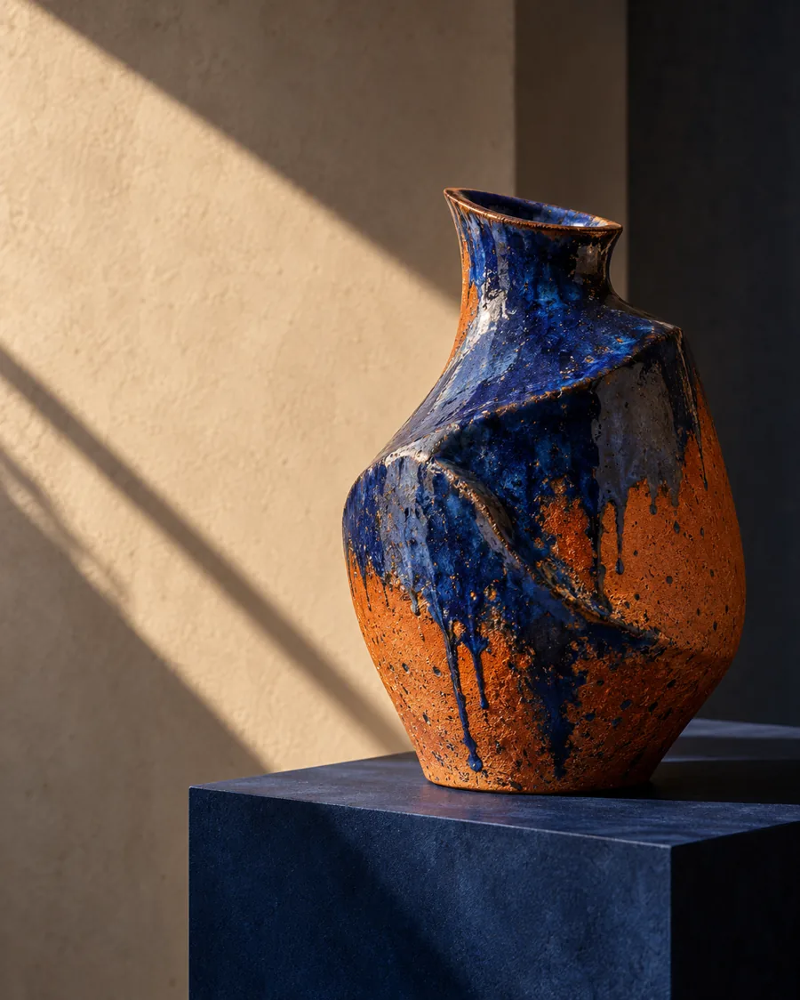
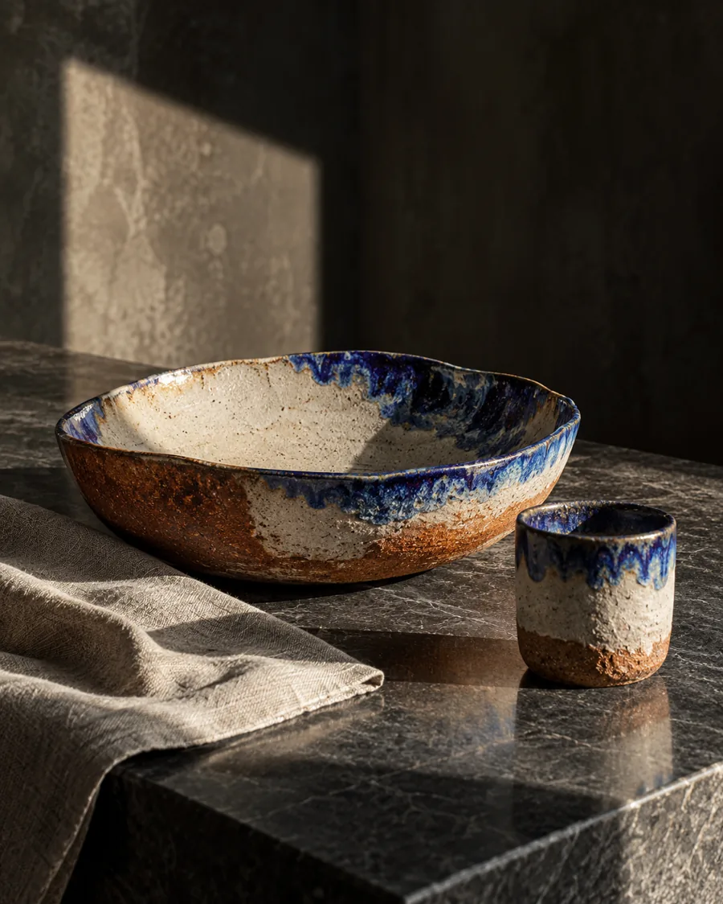
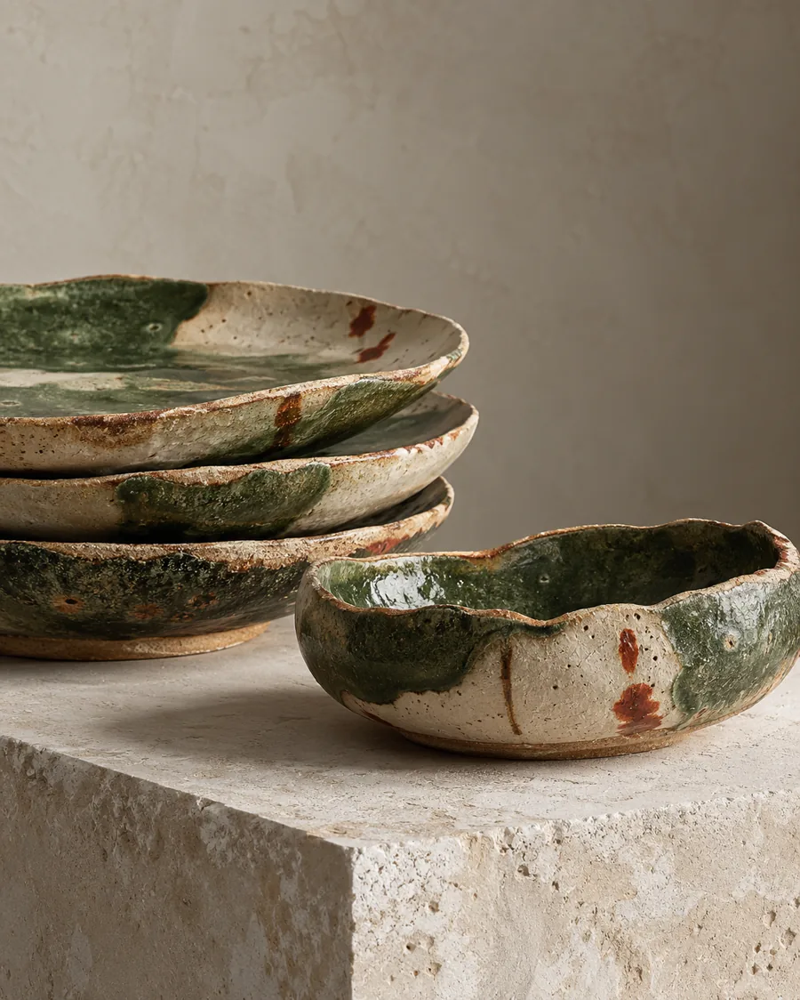

Experiência
R$ 190 · 2h
Em uma turma pequena, você modela sua peça e escolhe a cor. O ateliê esmalta depois da primeira queima; quando as duas queimas terminarem, é só buscar sua peça.
Argila · ferramentas · esmalte · duas queimas
Consultar dias ↗ LUMBRECERÂMICAS NADA BÁSICASConsultar datas ↗
LUMBRECERÂMICAS NADA BÁSICASConsultar datas ↗São José dos Campos · experiências em cerâmica
Conheça as aulas da Lumbre: escolha como quer experimentar a cerâmica e consulte os próximos dias direto com o ateliê.
Descobrir as experiências ↓A partir de R$ 190 · valores informados pelo ateliê em 22/10/2026
Escolha seu primeiro encontro
Da primeira modelagem a um percurso contínuo no ateliê. Tudo começa pelas mãos.
R$ 190 · 2h
Em uma turma pequena, você modela sua peça e escolhe a cor. O ateliê esmalta depois da primeira queima; quando as duas queimas terminarem, é só buscar sua peça.
Argila · ferramentas · esmalte · duas queimas
Consultar dias ↗R$ 300 · 2 encontros
Você modela na primeira aula e volta em outro encontro de 2h para aprender a esmaltar e pintar sua própria peça.
Modelagem + aula de esmaltação e pintura
Consultar dias ↗R$ 500 · 4 aulas/mês
Um mês para seguir praticando. Argila e primeira queima estão incluídas; segunda queima e esmaltes são cobrados à parte.
O valor da experiência é abatido da mensalidade
Consultar dias ↗Da argila à peça pronta
Na aula, você trabalha a argila e dá forma à sua peça.
Na Experiência, o ateliê cuida da esmaltação depois da primeira queima.
Depois das duas queimas, a peça fica pronta para você retirar.
Já sabe qual formato combina com você?
Perguntar pelas próximas datas ↗LUMBREATELIÊ DE CERÂMICACADERNO DE EXPERIÊNCIAS · SJCFalar com o ateliê ↗Notas para uma primeira aula
Duas horas para modelar, escolher uma cor e começar uma peça que vai seguir seu caminho pelo ateliê.
Ler sobre as experiências ↓
Na Experiência, você modela a peça em uma aula de 2h, em turma pequena, e escolhe a cor. Depois da primeira queima, o ateliê faz a esmaltação. Quando as duas queimas terminam, a peça fica pronta para retirada.
R$ 190 · argila, ferramentas, esmalte e duas queimas incluídos

A Experiência completa começa com a modelagem e continua em outra aula de 2h, dedicada a aprender a esmaltar e pintar a sua própria peça.
R$ 300 · dois encontrosConsultar datas ↗Na mensalidade, são 4 aulas por mês. Argila e primeira queima estão incluídas; segunda queima e esmaltes são à parte. O valor pago pela experiência é abatido da mensalidade.
Uma peça passa pelas mãos de quem aprende e pelo tempo do forno.
Qual dia tem aula? ↗LUMBREENCONTROS COM A ARGILAAULAS · CONSULTE AS PRÓXIMAS DATASWhatsApp do ateliê ↗A experiência começa pela escolha
Veja o que acontece em cada formato, escolha um e pergunte ao ateliê sobre os dias disponíveis.
4 aulas por mês, argila e primeira queima. Segunda queima e esmaltes são cobrados à parte. O valor da experiência é abatido da mensalidade.